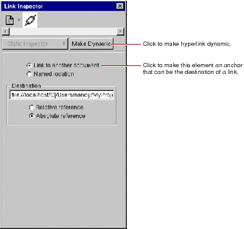
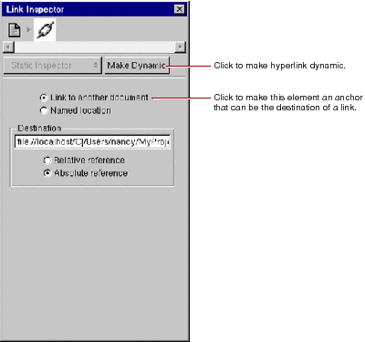

again.
again.
Alternatively, you can select existing text and then click once to convert the text to a hyperlink.

 Table of Contents
Table of Contents  Previous Section
Previous Section
again.
Alternatively, you can select existing text and then click once to convert the text to a hyperlink.

Table of Contents  Next Section
Next Section